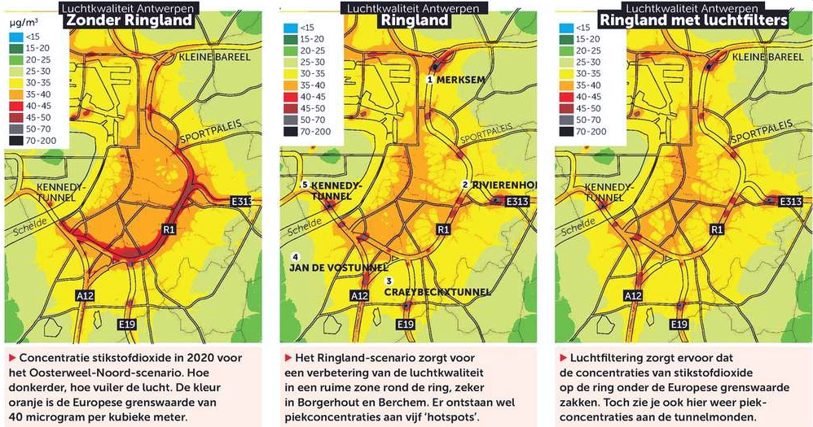
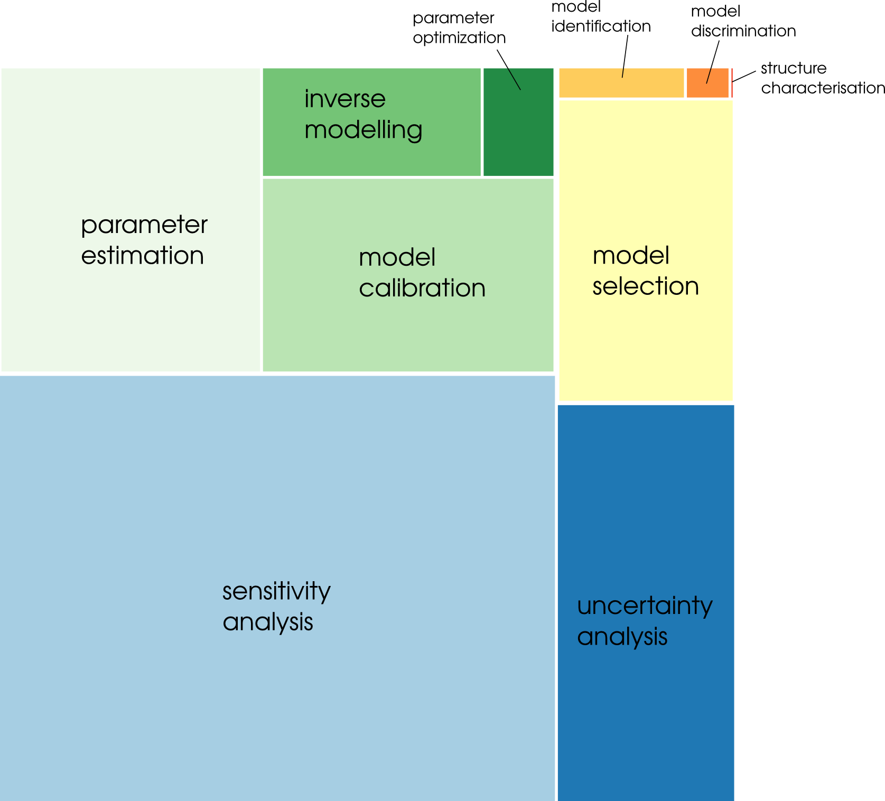

Development and application of a framework for model structure evaluation in environmental modelling
Stijn Van Hoey
Supervised by
Piet Seuntjens
Ingmar Nopens

Gent
1 July, 2016
1 July, 2016

a collaboration between
Flemish institute
Flemish institute
for Technological Research
https://vito.be
and
Department of Mathematical Modelling,
Department of Mathematical Modelling,
Statistics and Bioinformatics
http://biomath.ugent.be/
{kind=link}
Credits: Clement Windey
Credits: Clement Windey
{kind=link}
Predict
Predict
What if?
What if?

Contradiction...
- heterogeneous nature
- uniqueness of place
- diversity of
research questions
reusage of monolithic
legacy models
In literature...
Central problem statement:
“The identification of the most appropriate model structure for a given problem remains an outstanding research challenge”
Main objective:
“The right model for the right reasons”
- James W. Kirchner-
Wat zit er onder de motorkap?!? Essentieel om vergelijking mogelijk te maken: analogie.. requirements!.
Conclusions
- testbaarheid van individuele modelbeslissingen mogelijk maken heeft stelt vereisten aan modelopbouw: REQUIREMENTS!Thank you.
|